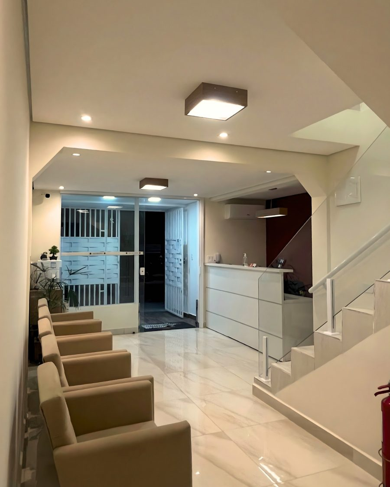
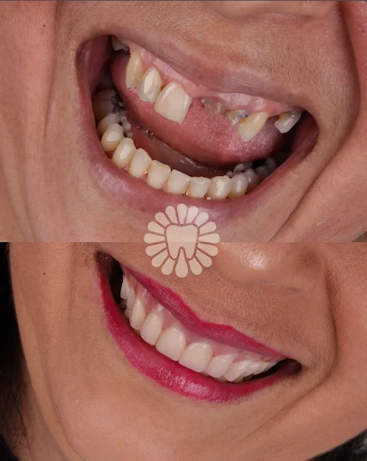
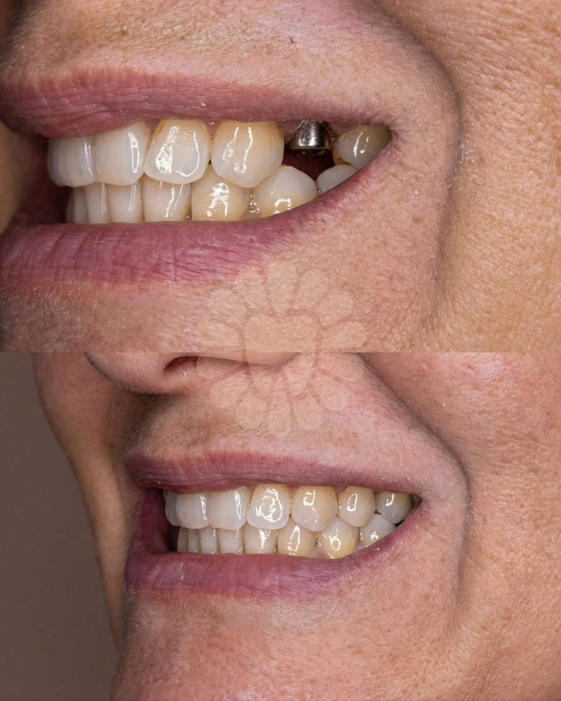

Restaurações Dentárias
Cárie ou dente quebrado? Avaliamos como reconstruir com foco em conforto e acolhimento.
- Cuidado com cáries e fraturas
- Resina escolhida para cada caso
- Etapas explicadas antes de começar
Clínica odontológica em Itaquera / Guaianases
A AKO ouve seu caso, explica as opções em linguagem simples e só recomenda o que faz sentido para você. Há décadas cuidando de famílias da Zona Leste.
Prefere escolher um horário? Agendar online
Como a decisão acontece
O primeiro compromisso é deixar seu caso claro. A decisão continua sendo sua.
Entendemos sua queixa, seus receios e suas prioridades antes de falar em tratamento.
Você conhece, em linguagem simples, as etapas e as diferenças entre os caminhos possíveis.
Nenhuma pressão para iniciar tratamento. O plano é explicado antes de começar.
Preservar vem antes de substituir
Quando um dente ainda pode ser tratado, a equipe explica as possibilidades antes de falar em substituição. No Reel, essa postura aparece do mesmo jeito que no consultório: conversa direta, indicação responsável e decisão sem pressão.
Assistir no InstagramPor onde começar
Escolha o sinal que mais se aproxima do que você sente e fale diretamente com a equipe.
Tratamentos e possibilidades
A indicação depende do seu caso. A equipe explica as alternativas antes de qualquer decisão.
Cárie ou dente quebrado? Avaliamos como reconstruir com foco em conforto e acolhimento.
Dor forte? A avaliação identifica o caminho para aliviar o desconforto e cuidar do dente.
Uma possibilidade para recuperar função e estética quando houver indicação para o seu caso.
Opções fixas ou removíveis avaliadas conforme sua mastigação, rotina e prioridades.
Seu ritmo é respeitado
A equipe explica o que vai acontecer, responde às dúvidas e conduz cada etapa com foco em conforto e acolhimento.
Com calma e acolhimento
Muita gente adia o dentista por medo. Na AKO, esse receio faz parte da conversa. O atendimento é conduzido com explicações simples, respeito ao seu tempo e foco em conforto e acolhimento.
Quero ser atendido com calmaExperiências publicadas pela AKO
Relatos que a clínica já apresenta em seu site institucional.
"Achei que não ia ter solução, mas na AKO resolveram tudo em menos de 3 semanas. Estou muito feliz com meu sorriso agora!"
"Eu tinha pavor de dentista, mas na AKO me senti acolhido desde o começo. Hoje perdi o medo e finalmente acabei com a dor que me incomodava há anos."
"Fiz clareamento e lentes de contato. Resultado incrível! Agora sorrio em todas as fotos. Equipe super atenciosa e profissional."
"Atendimento nota 10! Desde a recepção até o pós-tratamento, tudo foi perfeito. Recomendo para toda a família."
Prévia de resultados
As imagens permanecem bloqueadas para publicação até a validação documental e ética de cada caso.


Processo transparente
Cada etapa existe para você saber o que acontece agora e o que vem depois.
WhatsApp, telefone ou online. Você fala diretamente com a equipe para combinar o próximo passo.
Ouvimos sua queixa, avaliamos com cuidado e explicamos o que foi observado em linguagem simples.
Você conhece as opções, etapas e valores. O plano é explicado antes de começar.
O tratamento segue o plano combinado, com foco em conforto e acolhimento.
A equipe orienta retornos e cuidados posteriores de acordo com o seu caso.
No coração da Zona Leste
A AKO atende famílias de Itaquera, Guaianases e região em um endereço conhecido por gerações de pacientes.
Rua Tobias Asser, 12Perguntas frequentes
O valor depende da avaliação, da quantidade de dentes e da opção indicada. Antes de decidir, você recebe um plano com etapas, valores e possibilidades de pagamento.
Fale com a equipe pelo WhatsApp. Ela entende o que está acontecendo, verifica a disponibilidade e orienta o próximo passo.
Há opções de pagamento que variam conforme o plano. A equipe explica valores e condições antes do início.
Fale com a gente no WhatsApp para confirmar as condições e as formas de pagamento disponíveis.
A equipe utiliza anestesia e técnicas com foco em conforto. A experiência e a indicação dependem de cada caso e são explicadas antes do procedimento.
Sim. Conte esse receio desde o primeiro contato para que a equipe conduza a conversa e o atendimento com calma, sem julgamento e respeitando seu tempo.
Rua Tobias Asser, 12, Jardim Santa Terezinha, Itaquera / Guaianases. De segunda a sexta, das 9h às 18h, e sábado, das 9h às 13h.
Depende do caso. Na avaliação, a equipe explica as etapas, os prazos estimados e o que esperar antes de você decidir.
Conversa clara desde o início
Você não precisa saber qual tratamento pedir. Comece contando o que incomoda.